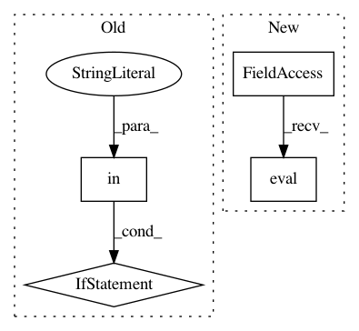

1082ba352c5f1d524b1fcba43ee611280b169224,fairseq/trainer.py,Trainer,valid_step,#Trainer#Any#,310
Before Change
agg_logging_output = self.criterion.__class__.aggregate_logging_outputs(logging_outputs)
// update loss meters for validation
if "loss" in agg_logging_output:
self.meters["valid_loss"].update(agg_logging_output["loss"], grad_denom)
// criterions can optionally log the NLL loss too
if "nll_loss" in agg_logging_output:
self.meters["valid_nll_loss"].update(agg_logging_output["nll_loss"], ntokens)
return agg_logging_output
After Change
def valid_step(self, sample):
Do forward pass in evaluation mode.
self.model.eval()
logging_output, sample_size = {}, 0
with torch.no_grad():
sample = self._prepare_sample(sample)
In pattern: SUPERPATTERN
Frequency: 3
Non-data size: 4
Instances
Project Name: elbayadm/attn2d
Commit Name: 1082ba352c5f1d524b1fcba43ee611280b169224
Time: 2018-09-25
Author: edunov@apache.org
File Name: fairseq/trainer.py
Class Name: Trainer
Method Name: valid_step
Project Name: OpenNMT/OpenNMT-py
Commit Name: 857e36921ab5ca51c919839ec0b6e87585160d0c
Time: 2019-02-14
Author: dylan.flaute@gmail.com
File Name: onmt/decoders/ensemble.py
Class Name:
Method Name: load_test_model